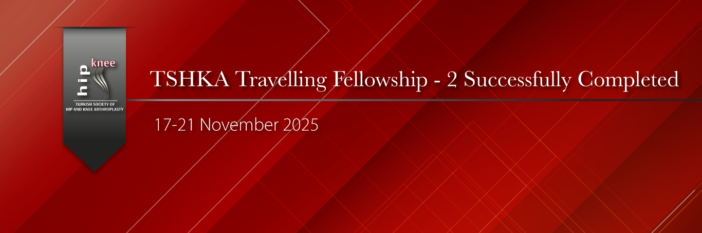

KADAD Traveling Course-2 was successfully concluded between November 17–21, 2025, across a total of 10 distinguished centers in Adana, Ankara, Bursa, and Istanbul, with the participation of 6 fellows selected from various cities and hospitals across Türkiye.
Under the direct supervision and mentorship of our highly experienced faculty members who are leaders in their fields:
* Patients were meticulously evaluated together with the fellows in the preoperative period, down to the finest details,
* The most complex cases were planned through one-on-one in-depth discussions,
* Primary and revision hip and knee arthroplasties, robotic hip and knee arthroplasties, and particularly complex hip arthroplasties on dysplastic backgrounds were performed live.
This intensive program enabled each fellow to follow every case from start to finish, actively participate in surgical decision-making processes, and engage in direct, one-on-one interaction with the faculty, thereby elevating the mutual transfer of knowledge and experience to the highest level.
We extend our heartfelt gratitude to the KADAD administration and all esteemed faculty members who contributed to this outstanding Traveling Course-2, which continues to set the standard and raise the bar in arthroplasty education in Türkiye.
With deepest respect and appreciation.

Resim Galerisi